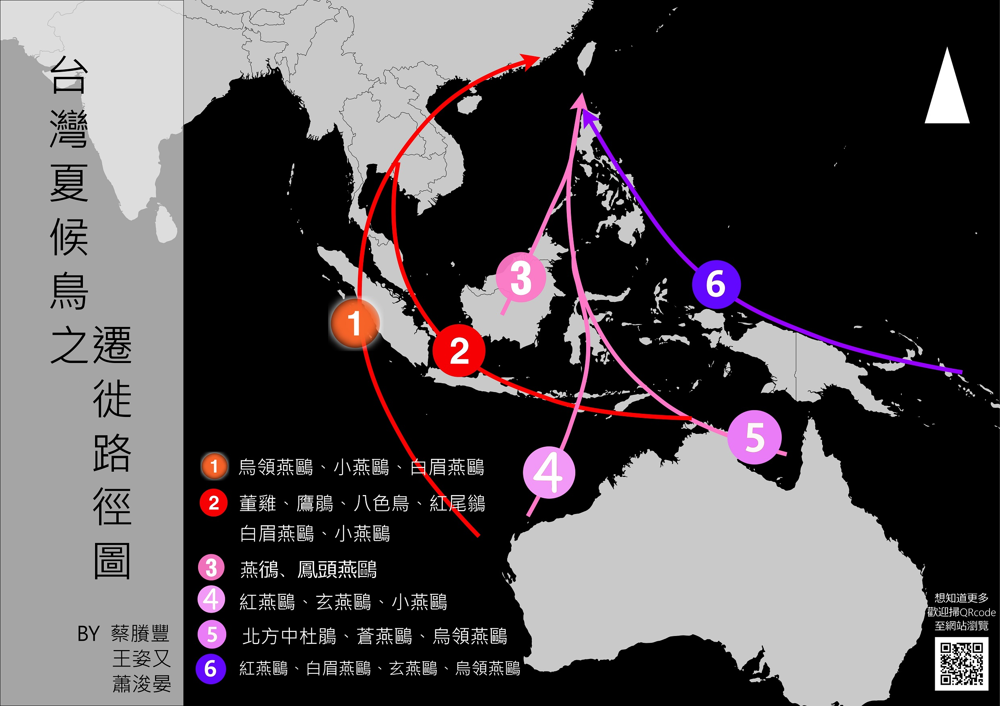

台灣夏候鳥遷徙路徑圖
 一等獎
一等獎
作者介紹
地理一
蔡賸豐
地理一
蕭浚晏
地理一
王姿又
-
利用動態圖模擬出候鳥飛行的路徑，
將數據資料的分析視覺化，使人對這些資訊更有興趣。
——歷史四 莊舒晴 -
候鳥的資料在蒐集上並不容易，
但仍透過文獻及國際組織的少數資料，完成內容充實的地圖。
——地理二 張庭肇 -
候鳥族群的連續位置資訊的取得、
處理與繪製頗具挑戰性，候鳥種類亦相當繁多，獲得冠軍是實至名歸。
——地理一 賴聰儀
地圖海報

主題說明
一、畫圖過程
我們利用eBird作為我們最主要的開放平台，
賞鳥者使用App來記錄觀測到的鳥種、時間、經緯，這些資料將自動匯集到eBird的網站。
我們利用中華鳥會的鳥類名錄，鎖定17種夏候鳥，接著向eBird申請下載這17隻鳥的資料，最後匯到QGIS。
夏候鳥的路徑大抵是南方(低緯近赤道)往北方(台灣)遷徙。
可能的原因是夏天北方相較於南半球或赤道地區，白天日照時間較長，較有利於哺育後代、獵食。
因此，多半來台的夏候鳥都會求偶，並且哺育後代。而十七之鳥當中，有四隻鳥的分布範圍極大，
台灣為北方族群的度冬地，但同時卻也是南方族群的度冬地，在是介各地的點位資料繁雜，
因此從我們繪製地圖的名單中踢出。
而鳥的分布與遷徙太過複雜，牽涉到過多原因。
因此，路線的繪製，首先是參考ebird的資料與時間分布，推測可能的路線，
再加上文獻的蒐集與資料的考證，進而得到可能的路線圖。然而，鳥的分布十分廣泛，
並且不同的鳥群會有不同的路線選擇，因此我們的路線是呈現大部分鳥類的帶狀前進的過程，
而非指真正的鳥類遷徙過程。
除此之外，因為鳥類的飛行是動態的，
因此我們希望能以動畫的方式呈現遷徙的路徑。但是原本的QGIS與CartoDB並沒有這種功能，
我們只能多次嘗試現有的功能。偶然之下我們發現了MMQGIS這個附件元件，
能將遷徙曲線由線轉換成點資料。於是我們手繪路徑，並佐以增密幾何功能再將布滿截點的線做轉換，
處理完成後便能利用CartoDB的熱區圖呈現動態的飛行。
二、本圖特色
- 聚焦於台灣、東南亞的夏候鳥遷徙
與一般的研究不同，我們不著重在鳥類的棲息地分布， 而是聚焦在夏候鳥是如何遷徙來台灣，對於自然科學的應用更有幫助，如禽流感等議題， 路徑圖更能有效呈現危險的區域。
- 嘗試畫出13隻鳥的遷徙路徑
大部分對於鳥類遷徙的研究，因為資料不足，而且不易處理，往往只能呈現大方向的路經示意圖， 通常是以洲的尺度來製圖，如東亞可能就會有固定的路線。然而我們比較13種鳥類的遷徙路徑， 在東南亞、印度尼西亞、澳洲一帶便歸納出6條帶狀的精緻路線。雖然資料的可信度的確有待商榷， 但這是我們利用現有的資訊下，畫出最佳化的路徑圖。